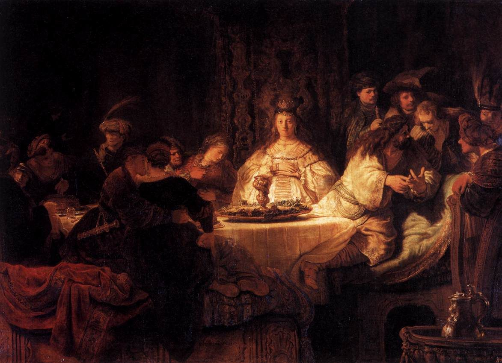

Jueces 14 — La Traducción Mister

La novia está quieta e iluminada en el centro, como en el capítulo, que no le da nombre ni palabra hasta que los invitados la amenazan; Sansón, a la derecha, cuenta con los dedos ante los hombres que se inclinan hacia él: el enigma del versículo 14 propuesto a los treinta compañeros. La copa y el plato sobre la mesa son el mishteh, el banquete de bebida del versículo 10.

Notas del traductor — versículo por versículo
Bajar. El capítulo avanza con un verbo, yarad, «bajar»: Sansón baja a Timna (v. 1), baja otra vez con sus padres (v. 5), baja a hablar con la mujer (v. 7), su padre baja (v. 10), y Sansón baja a Ascalón (v. 19). Timna está en el límite de Judá (Josué 15:10) y en la lista de ciudades de Dan (Josué 19:43), ambos ya en estas páginas; aquí pertenece a los filisteos.
«Ella es recta a mis ojos». Hi yashrah be’einai: la razón de Sansón para el matrimonio, dicha dos veces (vv. 3, 7). Es la frase que Moisés prohibió, «cada hombre lo que es recto a sus propios ojos» (Deuteronomio 12:8, ya en estas páginas), y la frase con que termina el libro, cuando «cada uno hacía lo que era recto a sus ojos» (Jueces 17:6 y 21:25, los dos ya en estas páginas). La RV 1909 dice «ésta agradó á mis ojos», la RV60 «ella me agrada», la NVI «es la que a mí me gusta»; la traducción conserva los ojos.
«Los filisteos incircuncisos». Sus padres preguntan si no hay mujer «entre las hijas de tus hermanos, ni en todo mi pueblo». Arelim, «incircuncisos», es el insulto que Israel guarda para los filisteos; Sansón mismo lo usa en 15:18, y Jonatán y Saúl en 1 Samuel 14:6 y 31:4 (ninguno todavía en estas páginas). La TNM 2019 resume a los padres en «Acaso no hay ninguna mujer entre tus parientes», y la NVI añade «ninguna mujer aceptable».
«Venía de Jehová». El narrador dice al lector lo que los padres no sabían: «porque él buscaba una ocasión contra los filisteos». El hebreo no dice si «él» es Jehová o Sansón. La TNM 2019 decide por Dios, «Jehová, quien estaba buscando una oportunidad»; la RV60 mantiene «porque él buscaba ocasión contra los filisteos». El texto griego B tiene ekdikēsin, «venganza», el texto A antapodoma, «retribución». «Los filisteos gobernaban sobre Israel»: moshlim es el verbo del gobierno que Gedeón rechazó para sí y para su hijo (Jueces 8:23, ya en estas páginas).
Las viñas. Sansón baja con su padre y su madre, y «llegaron hasta las viñas de Timna»; pero cuando viene el león está solo, porque «no contó a su padre ni a su madre». El texto deja esa costura a la vista. Un nazareo de Dios, que no debe comer nada de lo que sale de la vid (Jueces 13:14, ya en estas páginas), tiene su primera prueba entre las vides; el capítulo no comenta.
«El espíritu de Jehová irrumpió sobre él». El verbo es nuevo en el libro. Sobre Otniel y Jefté el espíritu «vino» (Jueces 3:10, 11:29), y a Gedeón lo «revistió» (6:34), todos ya en estas páginas; sobre Sansón tsalach, irrumpe. Las palabras «y el espíritu irrumpió sobre él» están en cuatro versículos de la Biblia hebrea: los versículos 6 y 19 de aquí, 15:14 (ya en estas páginas), y Saúl entre los profetas en 1 Samuel 10:10. Las letras son las de tsalach, «prosperar», la palabra de José en Egipto (Génesis 39:2, ya en estas páginas); si son una palabra o dos se discute. La RV 1909 dice «cayó sobre él», la TNM 1987 «entró en operación sobre él».
«Como quien despedaza un cabrito». Shasa es el verbo del ave abierta para el holocausto (Levítico 1:17, ya en estas páginas), y «sin tener nada en la mano» dice que lo hizo con las manos desnudas. La NVI lo dice «a mano limpia», y la TNM 2019 «usando solo las manos». Josefo, en el griego de las Antigüedades (5.287, numerado 5.8.5 en Whiston), lo hace estrangularlo y arrojarlo a un lugar boscoso.
Un enjambre en el cuerpo. Se aparta para ver la mappelet, «lo caído», y encuentra «un enjambre de abejas en el cuerpo del león». La palabra del enjambre es edah, la que nombra a «toda la asamblea de Israel» (Éxodo 12:3, ya en estas páginas); el texto griego B tiene synagōgē. Los dos textos griegos ponen las abejas «en la boca del león», y también la Douay, «in the mouth of the lion»; el hebreo dice el cuerpo. Josefo las pone «en el pecho».
Comer de un cadáver. La ley tiene por impuro al tacto el cadáver de todo animal que anda sobre sus zarpas: «todo el que toque sus cadáveres quedará impuro hasta la tarde» (Levítico 11:27, ya en estas páginas). Sansón raspa la miel con las palmas, come, y la da a sus padres, «pero no les contó que había sacado la miel del cuerpo del león». El capítulo no dice nada de impureza; dice lo que él no contó.
Contar. Higgid, «contar, declarar», es la palabra del capítulo. Sansón cuenta a sus padres lo de la mujer (v. 2), no les cuenta lo del león (v. 6) ni lo de la miel (v. 9), desafía a los invitados a declarar el enigma (vv. 12–14), es apremiado a declararlo (vv. 15–16), lo declara (v. 17), y paga a «los que habían declarado el enigma» (v. 19). Esta traducción usa «contar» con los padres y «declarar» con el enigma; la RV60 varía todavía más, y en el versículo 9 dice «mas no les descubrió».
Un banquete de bebida. «Sansón hizo allí un banquete»: mishteh viene de shatah, «beber» (diccionario), y los dos textos griegos lo llaman potos, una fiesta de bebida. Dura siete días, como el de Labán cuando «hizo un banquete» y Jacob tuvo que «cumplir la semana» de la novia (Génesis 29:22 y 29:27, ya en estas páginas). El capítulo no dice si el nazareo bebió. La Douay hace que el padre organice «a feast for his son Samson».
Treinta compañeros. «Cuando lo vieron, tomaron treinta compañeros». El texto griego A lee «cuando le temieron», una pequeña diferencia en las letras hebreas entre «ver» y «temer»; también Josefo dice que los de Timna le dieron treinta de sus jóvenes más fuertes, compañeros de nombre y guardias de hecho, «por miedo a su fuerza» (Antigüedades 5.289, numerado 5.8.6 en Whiston). La TNM 1987 los llama «treinta compañeros de boda».
«Déjenme proponerles un enigma». Achudah-na lakhem chidah: verbo y sustantivo son la misma raíz, chidah, y los invitados responden igual, chudah chidatkha, «propón tu enigma». La apuesta son treinta sedinim, «envolturas de lino», la mercancía de la mujer capaz de Proverbios 31:24 (ya en estas páginas), y treinta chalifot begadim, «mudas de ropa». La frase chalifot begadim está en tres versículos de la Biblia hebrea: los versículos 12 y 13, y las diez mudas de ropa que Naamán lleva a Israel (2 Reyes 5:5). El estante no se pone de acuerdo sobre el lino: la RV 1909 dice «treinta sábanas», la RV60 «treinta vestidos de lino», la TNM 1987 «treinta prendas de vestir interiores».
El enigma. Me-ha-okhel yatsa ma’akhal, u-me-az yatsa matok: dos líneas de tres palabras, «del que come salió algo de comer, y del fuerte salió algo dulce», con el que come y lo comido hechos sobre una raíz. Ningún invitado podía resolverlo, porque solo quien había visto el león sabía de qué hablaba. La RV60 dice «Del devorador salió comida». Josefo lo da como «lo que todo lo devora había producido de sí un alimento agradable, siendo ello mismo muy desagradable» (5.290).
El séptimo día, o el cuarto. El hebreo dice que los invitados amenazaron a la novia «al séptimo día»; pero en el versículo 17 ella llora sobre él «los siete días que duró su banquete». Los dos textos griegos leen «al cuarto día», y dos del estante los siguen: la NVI «Al cuarto día» y la TNM 1987 «al cuarto día». La RV60 y la RV 1909 mantienen «al séptimo día». Las lecturas difieren; esta traducción imprime el «séptimo» masorético y deja la tensión donde el lector puede verla.
«Seduce a tu marido … o te quemaremos». Patti, «seduce», es la palabra que los príncipes filisteos dirán a Dalila (Jueces 16:5, ya en estas páginas). La amenaza, «te quemaremos a ti y a la casa de tu padre con fuego», es la que Efraín hizo a Jefté, «Tu casa la quemaremos sobre ti con fuego» (Jueces 12:1, ya en estas páginas); aquí se cumplirá (15:6, ya en estas páginas). «¿Nos llamaron aquí para desposeernos?» usa yarash, el verbo del libro para poseer la tierra, como en Jueces 11:24 (ya en estas páginas), ahora en boca de filisteos sobre una boda israelita. La RV 1909 dice «para poseernos», la RV60 «para despojarnos».
«Solo me odias». Ella llora y dice que él la odia y no la ama, porque no le ha declarado el enigma. Él responde que tampoco se lo ha declarado a su padre ni a su madre, y a ellos ya les ha guardado dos secretos. Ella «lo apremiaba», hetsiqathu, y él se lo declaró; el mismo verbo y la misma queja de no amar vuelven con Dalila (16:15–16, ya en estas páginas).
El sol, o la alcoba. Los hombres responden «antes de que se pusiera el sol»: be-terem yavo ha-charsah, con una palabra rara para el sol, el cheres de «la subida de Jeres» (Jueces 8:13, ya en estas páginas). La TNM 1987 dice en cambio «aun antes que él pudiera entrar en el cuarto interior», la cámara nupcial, una lectura con otras letras hebreas, ha-chadrah por ha-charsah. Los dos textos griegos discrepan entre sí: el texto B tiene «antes de que saliera el sol», el texto A «antes de que se pusiera el sol». La traducción mantiene el sol masorético; la RV60 dice «antes que el sol se pusiese», y la TNM 2019 «antes de que se pusiera el sol».
Un enigma por otro. Responden en su forma, dos preguntas en dos líneas: «¿Qué es más dulce que la miel, y qué es más fuerte que un león?». Él responde con una tercera: «Si no hubieran arado con mi novilla, no habrían descubierto mi enigma». Charashtem, «ustedes araron», suena cerca de charsah, el sol del mismo versículo. La NVI dice «con mi ternera». Josefo hace que Sansón responda sin rodeos: «nada hay más traicionero que una mujer» (Antigüedades 5.294).
Ascalón. El espíritu irrumpe sobre él otra vez, y baja a Ascalón, una de las ciudades filisteas que Judá tomó en Jueces 1:18 (ya en estas páginas) y que aquí vuelve a ser filistea. Mata a treinta hombres, toma sus chalitsot, lo que se les quita, y da las chalifot, las mudas de ropa; las dos palabras se distinguen por una letra. La TNM 2019 dice «les quitó la ropa», más que el «despojos» del hebreo.
Arriba, y una esposa entregada. «Su enojo se encendió, y subió a la casa de su padre»: bajó a Ascalón, subió a casa. Luego «la mujer de Sansón pasó a ser de su compañero, el que había sido su amigo» —mere’a, la palabra de los treinta «compañeros» del versículo 11. La TNM 1987 lo llama «un compañero de boda suyo», la NVI «uno de los que lo habían acompañado en su boda». Josefo dice que ella se casó con el amigo que había conducido a la novia, despreciando el enojo de Sansón (Antigüedades 5.294).
Patrones que vale la pena recordar
Dónde esta traducción mantiene las palabras exactas y distintas: «bajar» para yarad, cada vez; «recta a mis ojos» para yashar be’einai, el estribillo final del libro; «irrumpir» para tsalach, aparte de «venir sobre» y «revestir»; «contar» y «declarar» para higgid; «proponer un enigma» para achudah chidah; «envolturas de lino» para sedinim, como en Proverbios 31:24; «mudas de ropa» para chalifot; «desposeer» para yarash; y «el séptimo día» y «el sol» como los tiene el texto masorético.
Ecos pagados. La regla del nazareo de Jueces 13:14 se encuentra con las viñas, y el espíritu que comenzó a agitar a Sansón en 13:25 irrumpe sobre él. El fuego con que Efraín amenazó en Jueces 12:1 se amenaza otra vez. La advertencia de Moisés contra «lo que es recto a sus propios ojos» en Deuteronomio 12:8 es la razón de Sansón. El rechazo de Gedeón a gobernar en Jueces 8:23 está detrás de «los filisteos gobernaban». El banquete de siete días de Labán en Génesis 29:22 (ya en estas páginas) da la medida de este.
Ecos sembrados. El fuego se cumple en Jueces 15:6. El espíritu irrumpe sobre Sansón por tercera vez en 15:14, y «los incircuncisos» vuelve en su propia boca en 15:18; esos tres ya están en estas páginas. «Sedúcelo», «no me amas» y «lo apremiaba» vuelven con Dalila en 16:5, 16:15 y 16:16, también ya en estas páginas. «Cada uno hacía lo que era recto a sus ojos» cierra el libro en 17:6 y 21:25, los dos ya en estas páginas.
Próxima entrega de este libro: Jueces 15 — Sansón vuelve con un cabrito y encuentra a su mujer entregada a otro; trescientas zorras con sus antorchas queman el grano filisteo, la mujer y su padre son quemados, Judá entrega a Sansón atado en Lehi, y el espíritu irrumpe sobre él otra vez: una quijada fresca de asno, mil hombres, y un manantial para un hombre sediento.